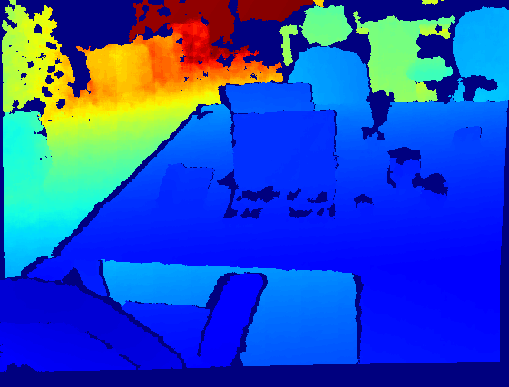

Zero-shot metric depth estimation is challenging due to the large variation in RGB and depth between indoor and outdoor scenes and the depth-scale ambiguity due to unknown camera intrinsics. We present DMD (Diffusion for Metric Depth), a state-of-the-art diffusion model for monocular absolute depth estimation. We make several innovations such as the use of log-scale depth parameterization to enable joint modeling of indoor and outdoor scenes, conditioning on the field-of-view (FOV) to handle scale ambiguity and synthetically augmenting FOV during training to generalize beyond the limited camera intrinsics in training datasets. Our method achieves a 25% reduction in relative error (REL) on zero-shot indoor and 33% reduction on zero-shot outdoor datasets over the current state-of-the-art using only a small number of denoising steps.
Quantitative comparison of DMD with the current SOTA for zero-shot metric depth estimation on indoor (first table) and outdoor (second table) scenes. Our method improves performance by a large margin on both domains.
@misc{saxena2023dmd,
title={Zero-Shot Metric Depth with a Field-of-View Conditioned Diffusion Model},
author={Saurabh Saxena and Junhwa Hur and Charles Herrmann and Deqing Sun and David J. Fleet},
year={2023},
eprint={},
archivePrefix={arXiv},
primaryClass={cs.CV}
}